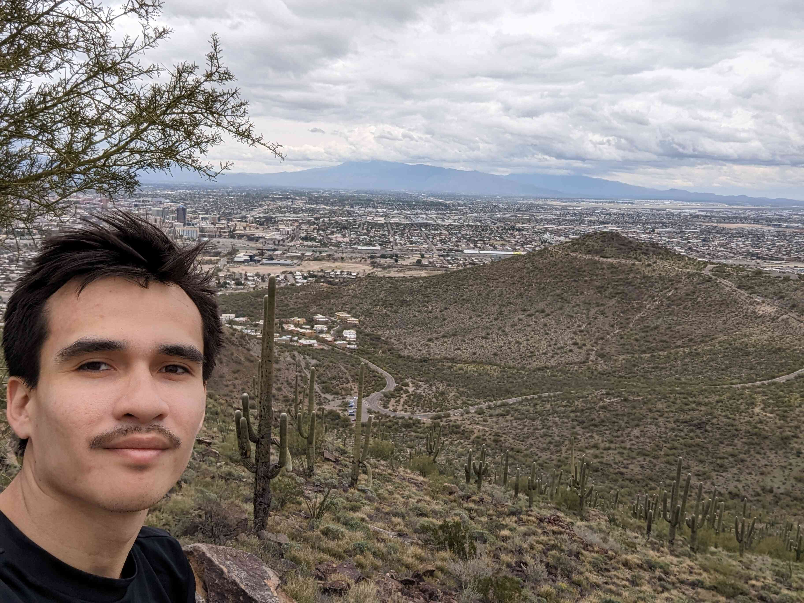

Hola, my name is Alan Andrés García López but you can call me Alan.
I am Guatemalan and I grew up in Guatemala City.
I am a researcher in atmospheric science studying rainfall variability in Central America.
My main motivation to do climate science is to generate climate information applicable to operational forecasts.
After 4 years working in Guatemala's National Weather Service (INSIVUMEH), I developed skills and earned experience in climate services and production of operational climate forecasts.
From that I reconsidered going to graduate school to get a PhD, in order to have a deeper understanding of the physics of tropical climate and a formal training as climate scientist in general.
Email: agarcia at ldeo.columbia.edu

Tucson, Arizona from Tumamoc Hill.
Some rainy clouds in the back,
giving water to the desert plants.
2022-Now PhD in Earth and Enviromental Sciences
Department of Earth and Enviromental Sciences (DEES), Columbia University (New York, USA)
Personal Website @ DEES
Advisor: Prof. Richard Seager, Lamont-Doherty Earth Observatory, Columbia University.
2022-2024 Master of Arts in Earth and Environmental Sciences
Department of Earth and Enviromental Scinces (DEES), Columbia University (New York, USA)
2015-2017 Master of Science in Astrophysics
University of Innsbruck (Austria) & University of Padua (Italy)
2010-2015 Bachelor in Applied Physics
Universidad de San Carlos de Guatemala
Github: https://github.com/atgarcial
Linkedin: https://www.linkedin.com/in/aagarcial/
Work in progress
Kowal K., Slater LJ., García-López A., Van Loon, AF.
A comparison of seasonal rainfall forecasts over Central America using dynamic and hybrid approaches from Copernicus Climate Change Service seasonal forecasting system and the North American Multimodel Ensemble. International Journal of Climatology, Volume 43, Issue 5, 2022. https://doi.org/10.1002/joc.7969
García-Pérez, J. García-López, Alan. Carillo-Ovalle, L. Solares-Cortez, N, López-Bran.
Harmful algal bloom of Pyrodinium bahamensein December 2018 in the Pacific coast of Guatemala. Ciencia, Tecnología y Salud, Volume 7, Issue 1, 2020. https://doi.org/10.36829/63CTS.v7i1.810
Negrete, C.A. Dultzin, D. Marziani, P. Esparza, D. Sulentic, J.W. Del Olmo, A. Martínez-Aldama, M.L. García-López, Alan. D'Onofrio, M. Bon, N. Bon. E.
Highly acreeting quasars: The SDSS low-redshit catalog> Astronomy and Astrophysics, 620, A118, 2018. https://doi.org/10.1051/0004-6361/201833285
No habrá una sola cosa que no sea
una nube. Lo son las catedrales
de vasta piedra y biblícos cristales
que el tiempo allanará. Lo es la Odisea,
que cambia como el mar. Algo hay distinto
cada vez que la abrimos. El reflejo
de tu cara ya es otro en el espejo
y el día es un dudoso laberinto.
Somos los que se van. La numerosa
nube que se deshace en el poniente
es nuestra imagen. Incesantemente
la rosa se convierte en otra rosa.
Eres nube, eres mar, eres olvido.
Eres también aquello que has perdido.Jorge Luis Borges (1985)